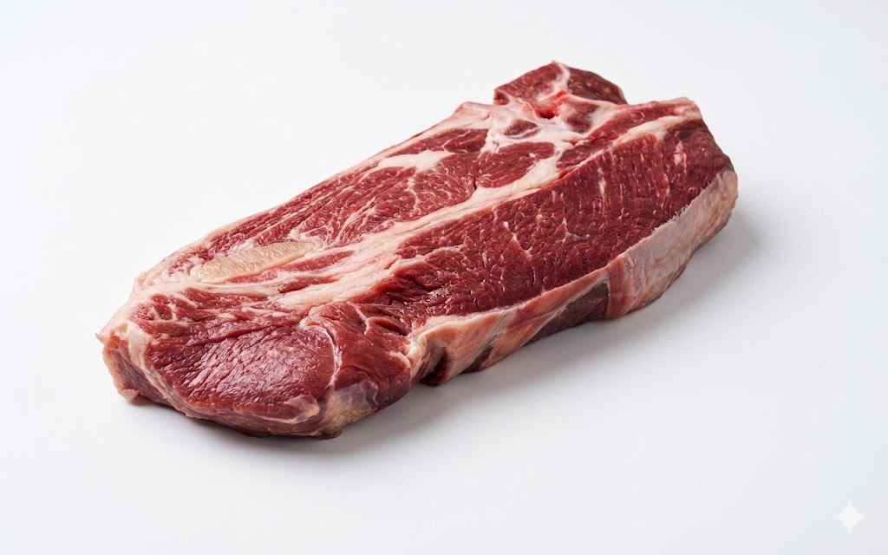

Mapa CarneCerta
Corte dianteiro de alta versatilidade
O acém entrega sabor profundo, ótimo rendimento e excelente resposta em cozimentos longos.

Ideal para • panela • ensopados • hamburguer
Maciez
3/5
Moderada
Gordura
2/5
Baixa
Sabor
4/5
Marcante
Abrir recomendador inteligente
Acém
Corte bovino versátil para quem quer equilíbrio entre preço, sabor e rendimento no preparo do dia a dia.
O acém absorve muito bem temperos, molhos e caldos. Em receitas de panela, desfia com boa estrutura e entrega textura mais macia conforme o tempo de cozimento aumenta.
Panela de pressão
Custo-benefício alto
Cozimento lento
4.8
Escolha do dia a dia
Melhor leitura para panela, molhos e preparos longos quando a prioridade é sabor intenso sem subir demais o custo.
Ideal para
Dica do açougueiro IA
Sele o acém antes de entrar com líquido. Isso concentra sabor e melhora a profundidade do caldo ao longo do cozimento.